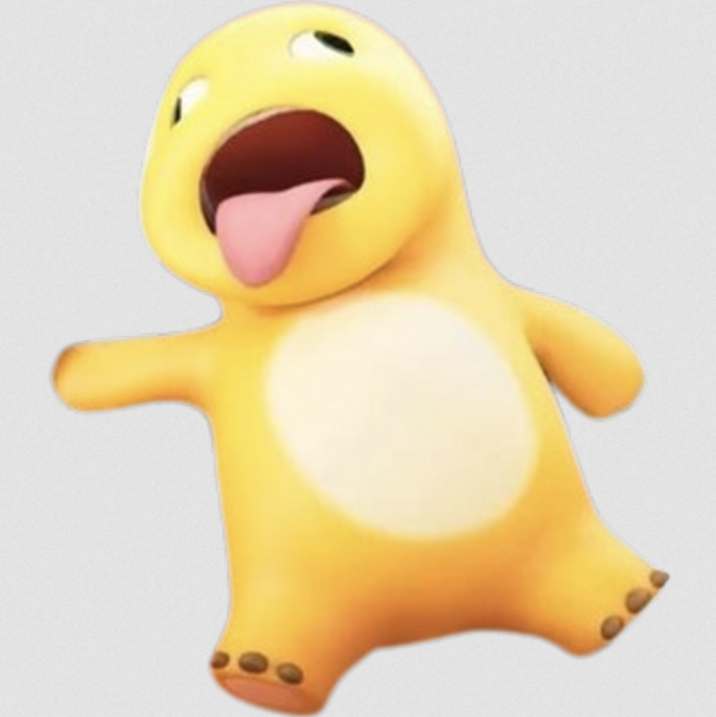

第一锅 · 12 种造型
点相同的三只，把奶龙抱回家。
点选露在上面的物品，放进下方的七格收集槽。三个相同会自动消除，把整锅清空就过关！
优先抓已经收集的物品。被压住的不能直接抓，摇一摇可以翻动整锅；撤回恢复上一步；提示会圈出一只可抓的物品。每种道具每关可用三次。
手机直接点物品。电脑可用方向键和回车，P 暂停，空格摇一摇。切到其他窗口会自动暂停。
游戏使用互联网上已有的奶龙、奶蛙图片。角色与图片版权归原权利人所有。